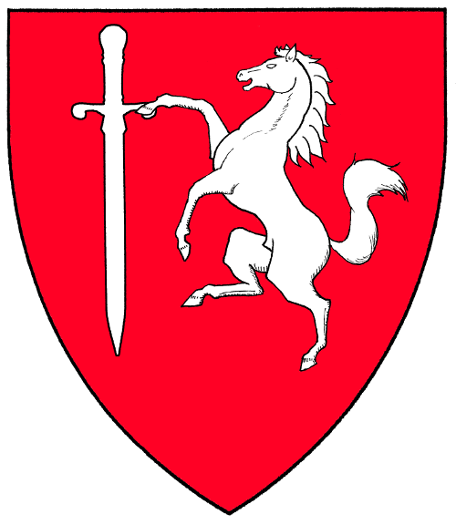

Games

Beer Spearing
Rules
No limit on players. Each Spearer takes a turn. A Pitcher serves up three cans of of beer. The Spearer whom skewers them in the least tries wins.
Rule 1. Don't let go of the spear.
Rule 2. If you have to toss a beer you missed back the the Pitcher, do not wound him with the beer.
Rule 3. Don't let go of the spear.
Rule 4. If there is a tie, the winner is selected by on-lookers with any tie-breakers decided by the Lairds.
Rule 5. Don't let go of the spear.
Beerspearing does not allow for alternate weapons, i.e. competitors from other Houses may not use their favorite sword or axe in place of the Official Beerspearing Spears.
Gluckhaus
Rules
The board is divided in fields numbered from 2 to 12 (with 4 often left out), arranged in the form of the rooms of a house. Each player rolls two dice.
On a roll of 3, 5, 6, 8, 9, 10 or 11, the player fills that shot glass with beer on the board if that room is empty, or takes the shot if it is full.
If the player rolls snake eyes, he has rolled a "Lucky Pig" and drinks all the drinks on the board, except for what lies in room seven.
If the player rolls a 12, he is "king" (Konig) and drinks all the shots on the board.
If the player rolls a 7, there is a "wedding" (Hochzeit) going on in the room, and one has to put a shot full of beer into the glass on there no matter what (a dowry). This builds up a jackpot until the "king" (12) is rolled. If the glass fills, it is placed on the 12 and an empty glass is placed on the seven.
If playing on a board with a 4, either nothing happens on rolling a 4, or a rule defined before starting the game comes into play (for example a shot is given to the board owner).
The game ends when one player rolls a 12 and has won all the shots.
Tablero
History
Tablero da Gucci (usually referred to simply as Tablero) is a drinking game adapted from an SCA gambling game, Tablero de Jesus (pronounced as in Spanish; hey-ZOOSE).
This form of the game was conceived within the medieval recreation group, the Society for Creative Anachronism, forgoing the use of coins in Tablero de Jesus and substituting beer in its place. Some dubbed it Tablero da Gucci, after the family name of the SCA household of some of the initial players, but it is commonly known as Tablero. Tablero is widely known through the western known kingdoms (as delineated by the SCA), Adolphus Blackbutte, also known as Andre Lessard, of the Gucci Household (SCA), is the inventor of Tablero, as delineated in the guide to the game published by his household mate Steffano da Gucci of the Gucci household {SCA}. Tableromeister Ulflaf Bjornson is the current head of the Tablero Association.
Basic Rules of the Game
Object of the Game
The object of this game is to make your opponent run out of beer (or whatever else is being played with - alcopops are also popular) before you do.Equipment (for playing with beer)
- One opponent (someone else who wants to play)
- 4 equal sized containers of something good to drink (bottles or cans of beer normally)
- Seven shot glasses, not necessarily of equal sizes.
- 2 six-sided dice
- A board with a 7 x 7 grid of squares.
The board should be made out of something that will stand up to being doused with beer on a fairly regular basis. Cloth is highly recommended. Wooden boards treated with a waterproof sealant are also a highly popular (though more expensive) option.
Starting the Game
Place your board on a flat surface. Three of the seven glasses are placed on each base line (the horizontal row closest to the player) of the board starting from the right hand corner nearest each player. The seventh glass is placed in the exact center of the board.
Find a spectator (normally the highest-ranking female, as she is a stand-in for 'the Queen') and have them roll the two dice. This is called the 'Queen's number' and will be important later.
Each player fills the three glasses on their base line from their supply of beer. Then, each player rolls one die. The player who rolls the highest number gets to choose who goes first. The player going first then takes the center glass, places it on their own base line, fills it, and has control of the dice.
Any advantage to going first is offset by having to fill four glasses instead of three.
Playing the Game
The current player rolls the pair of dice.
Seven, eleven and twelve are pass numbers. If a player rolls any of these numbers, their turn ends and they must pass the dice to their opponent.
When the two dice have been rolled the player must move one glass, for each die, the number of spaces equal to the die. Thus, if a 2 and a 4 are rolled, one glass must move 4 spaces, and another glass (not the same one) must move 2. All glasses can be moved by either player on their turn to roll, and can be moved in either direction. But, a particular glass may only move in one direction during a player's turn, and only if enough spaces exist to permit the full value on the die to be moved.
All seven glasses retain their file throughout play. Glasses are moved up or down their rank of the playing surface. That is, they move up and down the board, but not side to side or diagonally. If there aren't enough spaces to move a glass the full distance rolled, that glass may not be moved. If the player cannot move two glasses (one for each die), then their turn ends and they must pass the dice to the other player.
For example, if a glass is on rank '3' and file 'A', you can move this glass on a die roll of 1 or 2 (either up or down); or 3 or 4 (up only), but not on a roll of 5 or 6 since there is not enough space. On a roll of 5 or 6, a different glass would need to be moved, one that has 5 or 6 spaces available to it. If such a glass is not available, then the turn is forfeited to the other player.
Note that the player with the dice keeps rolling dice and moving glasses until required to pass them (i.e. a 7, 11, or 12 has been rolled, or the player cannot make a legal move).
Lining Up Glasses
The object of the game is to move the glasses to form a line. Horizontal and diagonal lines are permitted. For horizontal lines, six or seven glasses must be lined up in an unbroken row. For diagonal lines, the line must contain all seven glasses from corner to corner on the board.
When a line is made, the player who made it gets to "pull" the line. The player who made the line must drink at least half of the glasses in the line. For a row of 6, this is 3 glasses. For a row of 7, this is 4 glasses.
The remainder of the glasses in the row are then distributed by the "pulling" player as they see fit. Glasses may be given to the opponent, spectators, random passerby, or may be consumed by the "pulling" player. It is customary to give the opponent at least one glass. Traditions on this point vary by locality, however; in some customs, it is only required to drink at least one more shot than you distribute to your opponent, and the rest can be distributed however the "puller" desires.
The "puller" then places the empty glasses on the base line of their opponent. The opponent must then fill the empty glasses from their own stock of beverage. After doing so, the "puller's" turn ends and control of the dice shifts to the opponent.
In Drachenwald it is traditional that when a player is one glass away from making a full line, the spectators sing the gallop from Rossini's William Tell Overture until the player either completes the line or has to move a glass out of line.
The Queen's Number
If a Queen's Number is rolled, the player is allowed to choose one glass from anywhere on the board, and toast "To the Queen." They then drink the contents of the glass and place it on their opponent's base line. The opponent must then fill the glass from their supply. The person who rolled the Queen's Number retains control of the dice.
If you do not "call" the Queen's Number before you pick up the dice to roll again, your opponent may then call "treason to the Queen", whereupon they gain the privilege of drinking the toast. They then place the glass on the base line of the person who rolled, who must then fill it form their own supply. The rolling player does, however, retain the dice and continue with their turn. If the opponent does not call Queen's Number before the dice are rolled again, then the opportunity is lost for both players.
If the Queen's Number is a pass number (i.e., 7, 11, or 12), the rolling player drinks the toast and places the empty glass on their opponent's baseline, before transferring the dice to them.
In Drachenwald it is traditional that each toast to the Queen is different, often leading to an increasingly-flowery set of toasts.
Ending The Game
If you are required to fill an empty glass, and are unable to because your supply of beer has run out, you lose.
The only exception to this is if a player wins as a result of rolling (and drinking) the Queen's Number. In this event, the player drink the toast as normal. If the opponent cannot fill the glass, the glass still goes on the opponent's base line, but the player who drank the toast must then fill the empty glass from their own supply. As usual, the rolling player still retains control of the dice.
The Toast Round
After the last line has been won, the winner fills whatever glass their opponent was not able to fill and declares the toast round. The winner generally takes half of these glasses for themselves, and passes the rest around for the toast. The winner makes a toast, everyone drinks up, and then places the glasses back on the board.
The winner now has control of the board and may take on other challengers if they so wish.
Variants
Chevron Line (aka: Herald's Line)
In some variations, a 'chevron', defined as a triangle or pyramid of glasses extending from a baseline out to the center of the board and back to the same baseline, is also considered as a 'line'.
Starting Position
Players start in opposing corners
Player One: E6, F5, G7
Player Two A1, B3, C2
Queen: Center
Tournament Play
Tablero can be played in tournaments using the guidelines given here.
Scoring
The winner gets 2 points and the loser gets 1 point.
If the game was a "Skunk" (the winner did not have to open his second beer) then the winner gets 3 points and the loser get no points.
If the game was a "Royal Skunk" then the winner gets 4 points and the loser gets negative 1 points. A "Royal Skunk" occurs when a player goes through the entire game without ever having to fill even a single glass, with the exception of the three or four glasses they fill to start the game.
At the end of the tournament the person with the most points wins.
Other Rules
You are not allowed to play against the same person twice in a row during tournament play. If you do, then the second game does NOT count towards your tournament score.
Seconds and Cheaters
Part of the fun of Tablero can be cheating. Simple cheats are the most effective and take advantage of the inebriated condition of your opponent. As an example, one might move less spaces with a glass than indicated on the die. Of course, this will not work if your opponent is paying attention, so a suitable distraction or diversion is often necessary. Counting the spaces on one's fingers, while moving a different amount on the board sometimes works. Another popular cheat is to only partially fill the emptied glasses. This is difficult if transparent glasses are used and the level of beverage is obvious, instead of using opaque ones.
In keeping with the dueling spirit of the game, players will often employ someone to act as their second. The role of the second is to ensure that the proper number of spaces are moved on the die roll, and to judge that the glasses have been properly filled by the opponent. The second often also acts as an additional person to help drink won beverages. Particularly in a long tournament where many games may be played, seconds are sometimes swapped out between games.
Repercussions if you are discovered cheating include your opponent getting to pull all the glasses (drink all the beverage in play), and passing your turn. The glasses are then lined up on your (the cheater's) baseline and refilled from your beverage stock.
If accused of cheating and you actually were cheating, then properly played, you admit to it. The goal of cheating is to be clever and subtle; and to have fun with it. It is against the spirit of fun to deny cheating if in fact you have been discovered. It is not supposed to inspire an argument or genuine anger against your opponent.
It is important to remember that all such cheats and accusations are made in the spirit of fun. The game is meant to be social, silly, and a cheap way of drinking your opponent's beverages while trying to be miserly of your own. If you aren't already good friends with your opponent or you haven't agreed to cheating, it is advisable to play the game without it lest your conduct be regarded as disrespectful and result in bad feelings.
Important Notes
Although this game was designed for use with alcohol, it works just as well with soda pop, small pieces of candy (great for playing the game with children), coffee or espresso (which is known as Breakfast Tablero or Morning Tablero), or even water. The original game is based on using coins, which are another option if players wish to compete for money rather than inebriation. These games generally do not count for tournament play.
Individual players may have a designated drinker if they so desire. If this is done during a tournament, then the player must use the same designated drinker for the entire tournament, otherwise that player is disqualified.
Tablado (appropriately pronounced 'Tah-blotto') is a form of Tablero in which hard alcohol is used. This game is also know an Tablooey (Ta-blue-e) This form of the game is not recommended because pulling a line could cause the player to drink a minimum of 3 shots of alcohol in a very short time span. The chances of a player suffering alcohol poisoning as a result of this are extremely high, with a significant risk of death.
In any case, individual players assume all responsibility for choosing to incorporate alcohol in the game and should take all of the usual precautions, such as avoiding the operation of all vehicles, stopping when they've reached their limit and so forth.
Tablero is supposed to be a fun game. Play safely.